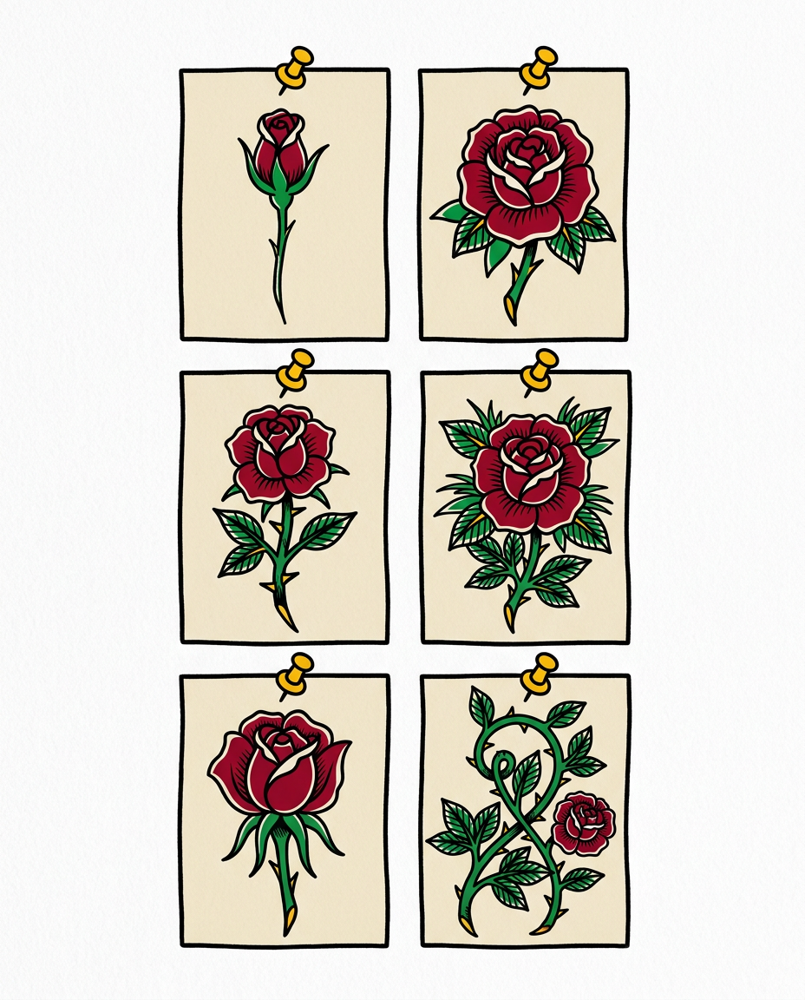

Step 1
Step 1 — Inspiration & References
Start by collecting ideas and references that connect to your concept.
Gather inspiration
- Write down the ideas or meaning behind your tattoo
- Collect reference images, shapes, and symbols
- Save everything in one folder or notebook
